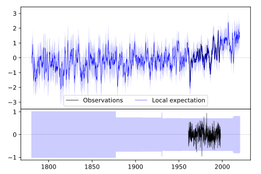
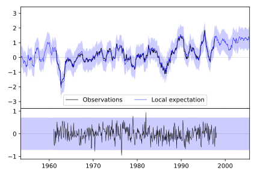
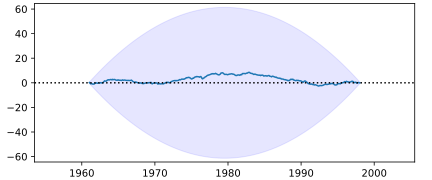

CARDIFF/RHOOSE [UK]





| Neighbour | Name | Country | Distance | Lon/Lat | Years |
|---|
| 037150 | CARDIFF/RHOOSE | UK | 0 | -3.4, 51.4 | 1961-1998 |
| 037898 | ROSS-ON-WYE | UK | 78 | -2.6, 51.9 | 1877-2011 |
| 037900 | LYONSHALL | UNITED KINGDO | 93 | -3.0, 52.2 | 1960-2012 |
| 037400 | LYNEHAM | UNITED KINGDO | 97 | -2.0, 51.5 | 1960-2020 |
| 037430 | LARKHILL | UK | 113 | -1.8, 51.2 | 1931-1960 |
| 037401 | HadCET on 29-11-19 | UK | 164 | -1.8, 52.5 | 1659-2019 |
| 037641 | READING UNIVERSITY | UK | 173 | -0.9, 51.4 | 1908-2019 |
| 037720 | HEATHROW | UK | 201 | -0.5, 51.5 | 1948-2020 |
| 037760 | LONDON/GATWICK | UK | 223 | -0.2, 51.2 | 1961-1998 |
| 037761 | GREENWICH_MARITIME_M | UNITED KINGDO | 235 | -0.0, 51.5 | 1763-1969 |
| 037762 | HASTINGS | UNITED KINGDO | 284 | 0.6, 50.9 | 1960-2012 |
| 037971 | EAST BERGHOLT | UNITED KINGDO | 310 | 1.0, 52.0 | 1960-2012 |
| 037970 | MANSTON | UK | 332 | 1.4, 51.4 | 1934-2020 |